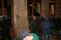
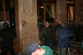
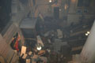
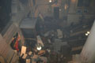

A tévészékház hátsó bejárata

Rendõrök mászkáltak ki-be
2006.09.19., kedd
tomcat
blog
droidzóna
levrov
Nesze neked, Gyurcsótány, ezt próbáld a szõnyeg alá söpörni! Megtörtént, ami 1956 óta nem. Megmozdultak a magyarok, és akárhogy csõcselékezik a TV2, meg törvényes keretekrõl pampognak a politikusok, bizony odacsaptunk, nem lehet többé Európa lábtörlõjeként kezelni.
Kicsit nehezen írok, mert a bal kezem gipszben van. Azért igyekszem bemutatni, mi történt ezen a lángba borult éjjelen, hogyan került százezer (és nem ötszáz meg ezer) ember a Kossuth térre, onnan a Szabadság térre, és miért tört ki a balhé, amit néhány droidnak köszönhetünk.
A Kossuth téri metrómegállóból kilépve félelmetes moraj fogadott. A tegnap sem lebecsülendõ tömeg most már az egész Kossuth téren hullámzott, megtöltve a parkolót, a túloldali parkot, de még a környezõ utcákat is. Nemzetiszín és Árpád-sávos lobogók erdeje lengett az esti szélben, és a hangosítás sem a tegnapi ciripelés volt már, valaki hozott rendes cuccot. Mindjárt a tribün felé indultam, ahol bárki szólhatott pár szót a mikrofonba, bár a legtöbben csak annak adtak hangot, hogy mennyire utálják a Gyurcsány-kormányt. Én egy kisebb anyaggal készültem, mégpedig a Zöld Párt egykori nyomozásainak eredményével, amellyel bebizonyítottuk, hogy a választásokon súlyos csalásokkal biztosítják, hogy csakis a jelenlegi politikai "elit" - idézõjelbe, mert ezt a jelzõt eléggé elkúrták - maradhasson kormányon, és figyelmeztetni a népet, hogy a köztársasági elnöktõl ne várjanak semmit, mert a mai napig nem reagált semmiféle formában az akkor hozzá beadott, egyébként elég súlyos bizonyítékokra. Persze most se nagyon durrant ki az öreg Sólyom az aktivitástól, csupán mekegett valamit, hogy neki nincs jogalapja a kormányt lemondatni, és annyi, jót õrködött a demokrácia felett. Miféle demokrácia? Ha azok az intézmények, amelyek a demokrácia mûködését biztosítanák, nem léteznek, akkor nem beszélhetünk demokráciáról.
A tömegen keresztülfurakodva begyûjtöttem pár kézfogást és vállveregetést (mit ad Isten, szinte a teljes olvasótáborom képviseltette magát, és ez még egy százezres tömegben is elég sûrû arányt jelentett), és valahogy elvergõdtem a tribünig. Régi ismerõsökkel találkoztam ott: Toroczkai Laci és a HVIM-esek biztosították a hangcuccot, de ott voltak páran a Jobbik vezérkarából is, valamint különféle nemzeti mozgalmak és hasonlók prominens tagjai. Mielõtt még valaki sivalkodni kezd, nem, skinheadek nem voltak. Az egész tömegben nem láttam ilyeneket. Még mindig egyszerûen fiatal arcokat láttam, tizenévestõl harmincasig, néha megszakítva az összhangot egy-egy õszesebb hajzattal. Magyarok jöttek ide, nem pártok vagy irányzatok, hanem a Nemzet, önmaguk képviseletében. A politikusok persze vinnyogva mutogatnak most egymásra, de fõleg a Fideszre, hogy õk az okai az egésznek, de tévednek: nem volt ott egyetlen fideszes sem. Ezek az emberek már a Fideszbõl is rég kiábrándultak, és most maguk akarták kézbe venni a sorsukat.
A tribün egyébként raklapokból készült, és elég instabil volt, mégis százak tolongtak körülötte, sorban állva a mikrofonért, amit egy benzines aggregát táplált. A tér különbözõ pontjain felszerelt hangfalak révén mindenki hallhatta, amit a beszélõk mondtak. Érkezésemkor éppen Csurka István állt odafent - ezúttal nem pártvezérként, hanem magánemberként, szerényen, visszafogottan. Két percben megköszönte a magyaroknak és a Jóistennek, hogy öreg fejjel megérhette, hogy ismét itt vagyunk. Míg a soromat vártam, összevissza beszéltek páran; mint tudjuk, a politikához mindenki ért, és hát miért ne értene máris a beszédmondáshoz is. Néhányat már úgy kellett lezavarni a színpadról, annyira beleszerelmesedett a saját hangjába. Mellettem két nõ felháborodva sipákolt, hogy én bementem eléjük a sorban, miközben õk már mióta várnak. Mondtam nekik, hogy engem meghívtak, mire folyamatosan kárálva megvitatták, micsoda dolog ez. Már csak egy srác volt elõttem, a diákok petíciójával, amikor az aggregát lerohadt.
A hangosító srác mondott valami olyat, mint Gyurcsány az országról, és piszkálgatni kezdte, addig pedig kézi hangosbeszélõt próbáltunk szerezni. Hoztak is valamit, de elég hergya volt, az aggregát meg attól sem tért magához, hogy elénekeltük neki a Boldogasszony anyánkat, régi nemzeti himnuszunkat. Míg a felszereléssel szerencsétlenkedtünk, jött a hír: egyetlen tévé sem foglalkozik a tüntetéssel, kivéve a Hír TV-t, a közszolgálati tévé pedig csak annyit mondott be, hogy ötszázan vagyunk, és most szórakoztató mûsorokat ad. A tömeg nagyon felháborodott ezen, de Toroczkai Laci lenyugtatta õket, és miután a mellettem álló jogász hölggyel megvitattuk a mikrofonba, hogy ezzel mit csinálhatunk, arra jutottunk, hogy egyelõre nem megyünk át a Szabadság térre, és bontjuk le az egész kócerájt, hanem két ember, Toroczkai és Gyetvay György Gergely, a Magyarok Világszövetségének budapesti elnöke átmegy a képviseletünkben, és felszólítják õket a közszolgálati televíziótól elvárható viselkedésre, ha már a mi adónkból fizetik õket. A fiúk elmentek, és végre életre kelt a hangcucc is.
Igen, beszélnem is sikerült, bár ez még gyakorlattal is elég nehéz, ha közben egy ideges hölgy rángatja az ember nadrágját, próbálván elmondani, hogy nekünk igazából semmi jogunk sincs a közszolgálati televíziót befenyíteni, miközben az ember tök másról beszél. Azért sikerült egy kis tüzet vinni a dologba, a tömeg lelkesen éljenzett, amikor felvázoltam, hogy ha Toroczkaiék nem járnak sikerrel, mind odamegyünk. Ekkor azonban hátulról is elkezdtek rángatni, hogy ne tüzeljem a tömeget, mert a hangcucc körül kisebb vita tört ki azon, hogy most szabad-e lázadozni vagy sem. Ehhez megjegyezném, amit szegény néhai Déry János mondott a moszkvai puccs idején, hogy forradalmat nem lehet visszafogottan csinálni, nem lehet picit lázadni, ez pont olyan, mint hogy nem lehet picit teherbe esni sem. Végül azért csak lázadtunk, mint a tévében nyilván láttátok is, de ez egy másik történet. Ott és akkor még sokan gondolták, hogy ha elszántan állunk a Parlament elõtt, akkor majd a Gyurcsány megsajnál minket és lemond.
Alig értem a beszéd végére, futva jött vissza Toroczkai, és már mondta is, mi történt. Nemhogy nem álltak velük szóba, de egyenesen rájuk rontottak a biztonságiak, és nem akarták õket kiereszteni, vagyis gyakorlatilag õrizetbe akarták õket venni. Igen, jól tudjátok, egy biztonsági õr ilyet még egy bûnözõvel sem tehet. Feldobtak egy pénzérmét, és úgy jött ki, hogy Toroczkai lesz, aki kitör. Úgy is lett. Visszatért hozzánk, és elmondta, mi volt, mire a tömeg szinte egy emberként átvonult a Szabadság térre.
- Kicsit gondját viselhetnénk annak a ruszki emlékmûnek is ott - jegyezte meg pár srác, akiknek nyilván csípte a szemét, hogy Magyarország ereklyés országzászlója helyén 1945 óta a hõs szovjet felszabadítókat dicsõítõ emlékmû áll, melyet egyébként néhány éve az állam fel is újított, és azóta rendõrökkel õrizteti, nehogy már valaki bántsa.
Átsétáltam a tévéhez, és kicsit néztem az egész teret ellepõ, kiabáló tömeget. Egyelõre nem volt semmi: a rendõrök sorban álltak az épület lépcsõjén, pajzs pajzs mellett, és vártak. Nem úgy nézett ki, hogy ide bárki is bejuthat.
- Te - bökte meg a vállam valaki - mi van a hátsó kijárattal?
- Mi van a hátsó kijárattal?
- Ott fogják kivinni Gyetvayt! Egy csomó rendõr áll ott is, menjünk oda!
Összerántottunk húsz-harminc embert, és hátramentünk. Ott még egyelõre csend honolt, bár százszámra álltak a rendõrautók. Bekopogtunk az ajtón, mire kijött egy tarkopasz In-Kal-os ork, a kisablakon át végigmért bennünket, majd betolt egy jókora vasrudat a túloldalon, és visszament a helyére.
Vártunk, várakoztunk, de nem történt semmi. Egy szakasz rendõr érkezett, nekik kinyitották az ajtót, de nem sikerült pofátlanul beslisszolnom mögöttük. Gyetvayt nem hozták ki. Kisvártatva azonban mentõsök érkeztek, és az ajtót kinyitó rendõr szavaiból kivehettük, hogy sérültek vannak odabent, ketten, egyikük a fején sérült.
- Nocsak - mondtam - beindult a gõzhenger?
Az épület túloldalára visszatérve azonban nem láttam mást, mint korábban, leszámítva, hogy már nem csak kiabáltak, de már kisebb tárgyakkal, sörösdobozokkal, kavicsokkal is dobálták a rendõröket. Azok még mindig rendületlenül álltak, csak néha eresztettek egy kis könnygázt a vehemensebb emberekre, akik le akarták húzni a pajzsukat.
Egy kicsit nézelõdtem, találkoztam pár ismerõssel, aztán elsétáltam a szovjet emlékmûhöz, és láttam, hogy a srácok tényleg kezelésbe vették. Ketten álltak az obeliszk peremén, és valami fémtárggyal pattogtatták le róla a cirill betûket.
- Nem kell valami szerszám? - vetettem fel.
Naná, hogy kellett. Fogtam magam, taxiba ültem, és rövidesen egy vasfûrésszel és egy húszkilós samuval tértem vissza. Akkor már vagy százan állták körbe az emlékmûvet. Mindjárt ki is kapták a kezembõl a szerszámokat, és azzal estek a rusnya kõoszlopnak. A homlokzatba ágyazott dombormûrõl azonban kiderült, hogy nem bronz, hanem acél, valószínûleg épp abból a meggondolásból, nehogy megrongálják, az alap pedig beton. A Sztálin-szobor is ilyen strapabíró volt, lehet, hogy tudnak valamit a szovjet szobortervezõk? Az emlékmû túloldalának márványtáblái azonban már nem bizonyultak ilyen strapabíróknak. A kalapács nyomán darabokban hullottak le a magyar nõk meggyalázóinak, nemzetünk gyilkosainak nevei. Akkor már százak jöttek oda, ellepték az emlékmûvet, mint a hangyák, és fémrudakkal, szemeteskukákkal, láncokkal is csépelték az obeliszk bontható részeit. A mészkõburkolatot ellepték a sprayfeliratok. Az egykori rendõrségi kordon elemeit létrának használva hamarosan felmászott pár srác a szovjet címerhez is, de a kalapáccsal nem boldogultak vele. Azt valamivel le kellett feszegetni, de mivel?
- A kordon kerítésébõl vágjunk ki rudakat! - vetettem fel. - A végét dolgozzuk el ékformára a kalapáccsal, és kész is a pajszer!
Az ötlet remekül bevált, s rövidesen két rúddal is feszegették a címert odafent. Ekkor azonban a televízió épülete felõl óriási kiáltozás kezdõdött, lövésszerû hangok dörrentek, és lángok csaptak fel. Odarohantam: hát autók lángoltak ott, s a dörrenések a következõ autó karosszériájából származtak, amelyet épp most vertek alaktalanra a fiúk valami vasoszloppal. A rendõrök behátráltak az épületbe. Üvöltözés, füst, a rendõrök leeresztették az épület rolettáit, és most onnan fújkodtak kifelé könnygázzal. Néhány tucat dühös tüntetõ hevesen támadta õket, de a televíziók hazudozása ellenére nem "futballhuligánok" (mindenhová õket képzelik), hanem egyszerûen feldühödött magyar emberek, akiknek a közszolgálati (tessék elgondolkodni e szó jelentésén) televízió megtagadta azon kérését, hogy beolvashassanak egy petíciót, ha már ilyen szépen összejöttek százezren. Nevetséges a tévé vezetõinek késõbbi makogása, hogy nem tehették, mert a petícióban egyetlen pont sem a televízióról szólt. Még szép, nem is a tévé ellen lázadtunk fel! De ez a hülye droidbanda elzárkózott egy egyszerû kéréstõl, és túszul ejtették egy követünket, holott ezt még a rendõrség sem tehette volna meg, hiszen nem követtek el semmit. Az In-Kal-nak azonban, úgy látszik, meg van engedve minden.

 

A tömeg a kapunak rontott, de erre elõtrappolt a szomszédos utcákból kétszázadnyi rohamrendõr is. Válogatás nélkül csépelték, rúgták az embereket, csak éppen ahhoz nem volt merszük, hogy a kaput ostromló keménymaggal húzzanak ujjat. A békés bámészkodókra rontottak rá, jó ötven méterrel hátrébb, nem kímélve nõt, gyereket sem, könnygázgránátokat dobálva. Magam is láttam, ahogy egy földön fekvõ lányt ütlegelnek, de errõl a kuruc.info-s Molnár Balázst kérdezzétek, õ ugyanis mellette állt, és a szerencsétlen lány vére az õ ruhájára fröccsent. S a gyalogság mögött, mint egy õsi dinoszaurusz, páncélozott tömegoszlató kocsi araszolt, vízágyúval és könnygázfelhõkkel terítve be az embereket. Engem is eltalált egy vízsugár, szegény fényképezõgépem szerencsére túlélte. De ekkor már én is együtt üvöltöttem a többiekkel, és én is rohantam, amikor a kocsi elakadt a mély sárban. Kerekei alá padokat, fémeszközöket szorítottunk, és már másztak is fel a tetejére, hogy megakasszák a vízágyút. Közben kõzápor zúdult a jármûre, bár ennek sok értelme nem volt, lévén páncélozott.
- Borítsuk fel! - ordítottam, és a fiúk átvették a szót: borítsuk fel, borítsuk fel, kiabálták, és máris a vízágyú holtterében álltunk, nekifeszülve a nehéz jármûtestnek. A kerekek erõlködve dagasztották a sarat, de hiába. Ekkor ütést éreztem a kezemen, s mire lenéztem, azt láttam, hogy ömlik belõlem a vér. Valami baromállat üveggel dobta meg a teherautót, de ezzek csak annyit ért el, hogy megsebesített néhányat azokból, akik értelmesebb módon próbálták megállítani. Hátraléptem, és abban a pillanatban a kocsi recsegve-ropogva borult az oldalára, megadva magát a népharagnak, no meg engedelmeskedve annak a tuhacsevszkiji alaptételnek, miszerint páncélozott jármûvek akadályokkal (jelen esetben padok, fák, korlátok) szabdalt városi környezetben vajmi esélytelen a gyalogság ellen. Az õ gyalogságuk fejvesztve visszavonult, miután kifogytak az összeverhetõ tinilányokból, és az utcaköveket, üvegeket hajigáló keménymag elõl jobbnak látták visszavonulni. Fõleg mivel azok tízszer annyian voltak, mint õk.
A teherautóban ülõ rendõrök pánikba estek, rémülten húzták magukra az ajtót, de a tömeg kifeszítette. És itt történt meg a csoda. Nemhogy nem lincselték meg õket, hanem kisegítették a félelemtõl reszketõ, szerencsétlen kisrendõröket a ronccsá zúzott kocsiból, közrefogták õket, és visszavezették õket az egységükhöz. Hajuk szála sem görbült, pedig az életük a tüntetõk kezében volt. Az esetet rögzítette néhány kamera, és aznap a világ összes nagyobb tévécsatornáján látható volt. A magyar csatornák persze nem tartoznak a világ nagyobbjai közé...
Mellékesen jegyzem meg, hogy Gergényi Péter, Budapest rendõrfõnöke szerint a jármûvet Molotov-koktélokkal dobálták meg, és a benne ülõ rendõrök "életüket mentve" keveredtek a tüntetõk közé. Bravó. Már csak a fényképeken kellene megmutatni a Molotov-koktélok nyomát. No meg megmagyarázni, hogy ha ez így volt, miért úszták meg sértetlenül a rendõrök a tömeg közepén. Hazudnak rendületlenül, ne légy hülye, ó, magyar.
A tömeg a diadaltól megrészegülten ordított, és újabb rohamot indított a kapu ellen. De nem, ez nem az õrjöngõ csõcselék volt, amirõl a televíziók ma oly okosan értekeznek. Az RTL Klub szerint a tömeg "hetven százalékban tisztességes emberekbõl, harmincban pedig csõcselékbõl állt", bár azt nem mondták meg, mi alapján számolták ezt ki, és hogyan lehet ezt eldönteni egy tömegre ránézve. Én azonban a vérzõ kezemmel inkább elindultam a tévészékház mögötti utcába, ahol több mentõautó is várta a sebesülteket. Ezek nagy része rendõr volt, én is egy csapat rendõr között találtam magam. Megkérdeztem a mellettem várakozó, lábán sérült õrmestert:
- Muszáj ezt csinálnotok? Eszetekbe se jut, hogy letegyétek a sisakot, pajzsot, és azt mondjátok, lófasz a Gyurcsánynak, nem harcolunk?
- Hát... mi erre kaptunk parancsot.
- Mire esküdtél fel? A kormányra?
- Nem.
- Hanem a köztársaság védelmére, igaz?
- Igaz.
- Szerinted az Gyurcsányékat jelenti?
A rendõrök hümmögtek, végül is ebben van valami, aztán megegyeztünk, hogy meglehetõsen frivol, hogy az épület egyik oldalán rommá verjük egymást, aztán idejövünk kötözésre, és békésen beszélgetünk.
- Ez elég ronda - mondta a mentõorvos - össze kellene varrni. Kórházba kell menned.
- Most?
- Hát, minél elõbb.
- Elvisztek?
- Persze, de még be kell kötöznünk õket - mutatott a rendõrökre.
- Na, azt nem várom meg, inkább elmegyek gyalog.
- Az is jó.
Elbúcsúztam a rendõröktõl, és elindultam vissza. A tévészékház sarkán egy fiatal lány ült, és keservesen sírt.
- Mi a baj? Megsérültél? - kérdeztem tõle.
- Nem, nincs semmi baj... csak... bántottak.
- Ki bántott?
- A rendõrök - intett egy szakasz rendõr felé, pár lépésnyire.
- De miért bántottak?
- Nem tudom. Nem csináltam semmit. Odamentem hozzájuk beszélgetni. Az egyik nõ fejbe vágott a gumibotjával, és azt mondta, takarodj innen, te kurva.
Odamentem a rendõrökhöz, s csakhamar meg is találtam köztük az egyetlen nõt.
- Már elnézést, de te mégis mit mûvelsz? - kérdeztem tõle.
- Takarodjál innen! - kiáltott rám a nõ, gyûlölettõl összeszûkült szemekkel.
- Mert ha nem, engem is fejbevágsz?
- Az lesz, bizony! - sziszegte. - Mocskos bûnözõ vagy!
- Hogy mi vagyok?
- Szemét! Az ilyeneket normális országban halomra lövik! Börtönben a helyetek, az egész gyújtogató bandának!!
- Á. Örülök, hogy még vannak ilyen simára mosott agyú hülye picsák a Cégnél.
- Na, fogjad vissza magad! - ugatott be a balszélrõl a kollégája.
- Akkor is ilyen nagy lesz a pofátok, ha fegyverek kerülnek elõ?
- Haha, milyen fegyverek!
- Bármilyenek. Egyetlen hülye legyen, aki lehoz egy pisztolyt. De akkor nektek annyi.
- Meg nektek is!
- Nono! Mondták ezt már az elõdeitek is.
Otthagytam a gyûlölettõl fröcsögõ rendõrkurvát, aki nyilván nagyon fel volt háborodva, hogy nem lõhetett a tömegbe. Nem ember az ilyen, hanem janicsár, a tizenkilenc évével meg a rendõr szakközépiskolájával. Annyi agya nincs, hogy felfogja, ez nem az a csõcselék, amit õ elképzel. Mindenki egy volt itt: korra, nemre, vallásra való tekintet nélkül magyarok voltunk, csupán magyarok, segítve és védve egymást, váll váll mellett harcolva. Mindenki tegezett és sziázott mindenkit, ismeretlen emberek fogtak össze egy-egy kis feladat megoldására, legyen az egy ruszki címer leszerelése vagy a rendõrkordon áttörése. Hírek jöttek-mentek, de nem rémhírek, és semmi szélsõséges nézet nem terjedt. 1956 szelleme tért vissza, bármennyire nevetségesnek is fogják tartani ezt a kijelentést azok a monitorba gyógyult balfaszok, akik mindenkinél okosabbnak hiszik magukat, mert gyorsabb Internet-kapcsolatuk van. Jól példázza ezt, hogy amikor egyszer letettem a 300 ezer forintos fényképezõgépemet a szovjet emlékmûnél, majd elszaladtam az MTV-hez, és véletlenül ott hagytam, tíz perc múlva visszaérkezve ugyanott találtam, ahol hagytam, még szóltak is, hogy ott van. A szerszámok is megvoltak, sem a fûrész, sem a nagy kalapács nem kallódott el, pedig legalább ezer kézen átment, míg az emlékmû szánalmas csonkká torzult. Ha holnap feljönnek Pestre a vidékiek, megindulnak megint a traktorok, s jön mindenki, aki eddig még nem jött, olyan nemzetegyesülés történik, amire sosem volt példa, még 1956-ban sem. A Kárpátok bércein ezen az éjszakán felsütött a nap, legyen ez bármilyen bornírt képzavar.

A tévészékház mellett egy század rendõr lezárt egy kis utcát. Toroczkai Lacit pillantottam meg ott, amint a rendõrök parancsnokával beszél. A rendõrtiszt füle vérzett, és arról beszélt Lacival, hogy hajlandóak tárgyalni, ha ráveszi a tömeget, hogy húzódjanak félre, és engedik a tûzoltókat dolgozni. Ez esetben beengedik õt, és megengedik, hogy felolvassa a petíciót, amit már a balhé elõtt is szeretett volna, csak akkor nem engedték. Mondtam, hogy én is bemennék, egyrészt mert kár lenne kihagyni egy ilyen történelmi pillanatot, másrészt egyáltalán nem tartottam jó ötletnek, hogy Laci egyedül menjen be. Bár a rendõrök beleegyeztek, õ maga ragaszkodott hozzá, hogy egyedül menjen. Jó, legyen: hátrébb tereltük az embereket, és Laci eltûnt a lángoló autóroncsok között.

Elõrementem én is, a kocsikat megkerülve, legalább azt fényképezzem le, hogy beengedik. Meglepetésemre azonban a tévészékház kapuja nyitva volt, és ki-be jártak az emberek. Egy fia rendõr sem volt már, sem itt, sem beljebb. A tévések mind elmenekültek, és odahagyták az épületet. Nézelõdni kezdtem a kihalt folyosókon. A kaput erõsen feldúlták ugyan, de beljebb semmi nyoma nem volt pusztításnak. Pár sráccal körbenézelõdtünk, néhány helyen még a kávét is az asztalon hagyták. A televízió adása megszûnt. Kongó folyosókon jártunk, az ajtókon ismert nevek, mûsorok címei - de sehol senki.
Csakhamar kitaláltuk, hogy az egyik srác által cipelt, jókora magyar zászlót ki kellene tûzni az épület legtetejére.
- De hogy lehet oda feljutni?
- Hát, biztos van valami módja! Nézzük a lépcsõházat.
Találtunk is egy csomó lépcsõt, és csakhamar a tetõn találtuk magunkat. Csúszós volt minden az esõtõl, és tûzlétrák labirintusában próbáltunk feljutni a fölöttünk ágaskodó toronyba, amirõl úgy sejtettük, hogy az utcára néz. A fiúknak egy idõ után inukba szállt a bátorságuk, nekik nem szokásuk villámhárítókba kapaszkodva mászkálni jó harminc méter magasan, de hát én már megszoktam a Lánchídon, és a sérült kezem sem akadályozott különösebben, így csakhamar feljutottam a kinézett pontra. Valami légkondicionálók mûködtek ott, és egy rakás vaskos kábel tekergett mindenféle antennákhoz. A homlokzatra a lefelé vezetõ lépcsõ ablakát választottam ki, ami egy kicsit kitört, de úgyse ismerem be, hogy én voltam, tanú meg nincs. Üvegszilánkokkal rögzítettem a zászlót, amelynek megjelenésére odalent harsány éljenzés tört ki. Apró kis hülyeség, de azért valakinek ezt is meg kellett csinálnia.
 

A földszintre leérkezve, az önfeledten ünneplõ forradalmárok között arról terjengtek a hírek, hogy állítólag ötszáz rendõr tart Budapestre, hogy kiverjen minket innen.
- Baromság - mondtam. - Ötszázzal több emberrel sem érnének sokat.
De ezt mindenki más is tudta. Senki sem vette komolyan a TV2 riogatását. Megjegyzem, a TV2 még ezekben a percekben is az órákkal ezelõtti csata képeit mutogatta, és azt hazudozták, hogy a rendõrök az épület elõtt oszlatják a tömeget. Hogy közben hová lett az MTV adása, arról nem szóltak...
Kifelé menet rossz helyen fordultam be, és egy kis folyosóra jutottam, ahol pár tûzoltó pakolászta a tömlõket, és egy középkorú emberke szorongatott egy tévékamerát.
- Nem veszed az eseményeket? - kérdeztem.
- Nem! - felelte ellenségesen.
- No, hát harapsz is?
- Nem vagyok vicces kedvemben!
- Mi a baj?
- Hogy összetörtétek a kocsimat, az!
- És most rám haragszol? Nem én voltam.
- Rád is! Mit keresel te itt?!
- Bejöttem. Tudniillik forradalom van.
- Akkor takarodjál ki! Úgy, ahogy bejöttél! Ez itt az én munkahelyem, te nem ide való vagy! Mit keresel itt?!
- Anyádat, mert hallottam, hogy olcsó.
Olyan jó kedvem volt, hogy el is felejtettem fölképelni a pimaszkodásért. Persze, tudom, szegény-szegény, oda az autója...
Egy teremmel odébb egy szakasz rendõrbe botlottam. Üldögéltek, és nézték a plafont.
- Sziasztok.
- Szia.
- Na, most jól szétvertük egymást. Most jobb?
- Hát, nem.
- Jól egymásnak ugrasztottak minket, és végül nincs semmi.
- Valahogy úgy - mondta az egyik rendõr. - De akkor most már ki is békülhetünk, nem?
Kezet fogtunk, és annak a rendõrnek a szemében benne volt, hogy az a harcias ribanc odakint, a gumibotjával, soha nem jut el odáig, hogy ránk lõhessen. Az ilyen rendõrök nem fogják hagyni.
Odakint már oszladozott a tömeg. A csata megvolt, gyõztünk, mit csinálnánk már itt tovább. Késõbb hallottuk a híreket, hogy a rendõrség vezetõi diadalmasan bejelentették, hogy százötven rendõrrel sikerült visszafoglalni a tévészékházat, és "kezelik a helyzetet". A helyzet, amit kezeltek, annyi, hogy bent volt még úgy harminc ember az elõcsarnokban, õket kizavarták, és annyi. Gondoljunk bele, vajon vissza tud foglalni egy épületet százötven rendõr, ha ezer sem tudta megvédeni?
Hajnalodott. A Kossuth téren megjelent az elsõ traktor. Kis teherautóról friss péksüteményt, ásványvizet kínáltak a gazdák a budapestieknek. Természetesen ingyen. Nem felejtették el ugyanis, mit tettünk értük, amikor õk jöttek fel tüntetni. Én a kórház felé indultam, hat öltéssel rakták össze szétvágott csuklómat. Valószínûleg örökre nyoma marad. De ma történelmet írtunk, és ha egyszer lesz unokám, megmutatom majd neki azt a réz O betût, ami a dzsekim zsebében lapult, és elmesélem majd, honnan vertük le azon a szeptemberi éjszakán. Talán akkor már ismét az ereklyés országzászló fog lengeni a Szabadság téren.
Utóirat. Blogadmin barátom foglalta össze a legszebben mindazt, ami odakint történt. Olvassátok el.
| << elõzõ nap | következõ nap >> |